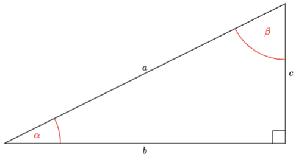
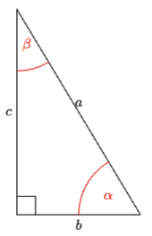
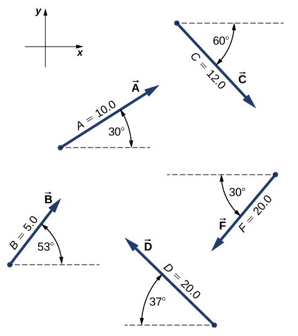

C2.X Problems#
Problem C2.1
The hypotenuse of a right-angle triangle has a length of 8.6 cm. The opposite side is 4.30 cm. What is the length of the adjacent side?
Show code cell source
%reset -f
import sympy as sym
hyp = 8.6
opp = 4.30
adj = sym.Symbol('adj')
eq = hyp**2 - opp**2 - adj**2
sol = sym.solve(eq,adj)
print('The adjacent side is '+str(sol[1])+' cm.')
Show code cell output
The adjacent side is 7.44781847254617 cm.
Problem C2.2
Consider the triangle shown in the figure.

If \(b = 10.0\) m and \(\alpha = 26.6^\circ \), find the following:
the length of \(a\).
the length of \(c\).
the angle \(\beta\) in radians.
Show code cell source
%reset -f
import sympy as sym
import numpy as np
b = 10.0
alpha = 26.6*np.pi/180.0
a = sym.Symbol('a')
c = sym.Symbol('c')
beta = sym.Symbol('beta')
eq1 = sym.cos(alpha) - b/a
sol1 = sym.solve(eq1,a)
a = sol1[0]
print('Lenght "a" is '+str(a)+' m.')
eq2 = sym.sin(alpha) - c/a
sol2 = sym.solve(eq2,c)
c = sol2[0]
print('Lenght "c" is '+str(c)+' m.')
eq3 = sym.sin(beta) - b/a
sol3 = sym.solve(eq3,beta)
beta = sol3[0]*180/np.pi
print('Angle "beta" is '+str(beta)+' degrees.')
Show code cell output
Lenght "a" is 11.1837528560483 m.
Lenght "c" is 5.00762697743844 m.
Angle "beta" is 63.4000000000000 degrees.
Problem C2.3
Consider the triangle shown in the figure.

If \(c = 5.0\) m and \(\beta = 14.3^\circ \), find the following:
the length of \(a\).
the length of \(b\).
Problem C2.4
An adventurous dog strays from home, runs three blocks east, two blocks north, one block east, one block north, and two blocks west. Assuming that each block is about 100 m, how far from home and in what direction is the dog? Use a graphical method.
This problem is a slightly modified version from OpenStax. Access for free
Show code cell source
%reset -f
import numpy as np
# let +x be east, +y be north
dx1 = 3
dx2 = 1
dx3 = -2
dy1 = 2
dy2 = 1
# x-direction
dx = dx1 + dx2 + dx3
dy = dy1 + dy2
print('Displacement in x is: '+str(dx)+' m.')
print('Displacement in y is: '+str(dy)+' m.')
d = np.sqrt(dx**2 + dy**2)
theta = np.arctan(dy/dx)*180/np.pi #first quadrant
print('Distance from home: '+str(d)+' m.')
print('Direction: '+str(theta)+' degrees north of east.')
Show code cell output
Displacement in x is: 2 m.
Displacement in y is: 3 m.
Distance from home: 3.605551275463989 m.
Direction: 56.309932474020215 degrees north of east.
Problem C2.5
Assuming the +x-axis is horizontal and points to the right, resolve the vectors given in the following figure to their scalar components and express them in vector component form. 
This problem is a slightly modified version from OpenStax. Access for free
Show code cell source
%reset -f
import numpy as np
#vector A
A = 10.0
thetaA = 30*np.pi/180.0
Ax = A*np.cos(thetaA)
Ay = A*np.sin(thetaA)
print('Ax = +'+str(Ax))
print('Ay = +'+str(Ay))
print(' ')
#vector B
B = 5.0
thetaB = 53*np.pi/180.0
Bx = B*np.cos(thetaB)
By = B*np.sin(thetaB)
print('Bx = +'+str(Bx))
print('By = +'+str(By))
print(' ')
#vector C
C = 12.0
thetaC = 60*np.pi/180.0
Cx = C*np.cos(thetaC)
Cy = -C*np.sin(thetaC)
print('Cx = +'+str(Cx))
print('Cy = '+str(Cy))
print(' ')
#vector D
D = 20.0
thetaD = 37*np.pi/180.0
Dx = -D*np.cos(thetaD)
Dy = D*np.sin(thetaD)
print('Dx = '+str(Dx))
print('Dy = +'+str(Dy))
print(' ')
#vector F
F = 20.0
thetaF = 30*np.pi/180.0
Fx = -F*np.cos(thetaF)
Fy = -F*np.sin(thetaF)
print('Fx = '+str(Fx))
print('Fy = '+str(Fy))
print(' ')
Show code cell output
Ax = +8.660254037844387
Ay = +4.999999999999999
Bx = +3.009075115760242
By = +3.993177550236464
Cx = +6.000000000000002
Cy = -10.392304845413264
Dx = -15.972710200945857
Dy = +12.036300463040966
Fx = -17.320508075688775
Fy = -9.999999999999998
Problem C2.6
A sledge is being pulled by two horses on a flat terrain. The net force on the sledge can be expressed in the Cartesian coordinate system as vector \(\vec{F} = (-2980.0~\hat{i} + 8200.0~\hat{j})\) N, where \(\hat{i}\) and \(\hat{j}\) denote directions to the east and north, respectively. Find the magnitude and direction of the pull.
This problem is a slightly modified version from OpenStax. Access for free
Show code cell source
%reset -f
import numpy as np
Fx = -2980.0
Fy = 8200.0
F = np.sqrt(Fx**2 + Fy**2)
angle = np.arctan(np.abs(Fy/Fx))*180.0/np.pi
print('Magnitude is '+str(F)+' N.')
print('Direction is '+str(angle)+' degrees clockwise from the -x axis.')
Show code cell output
Magnitude is 8724.700567927819 N.
Direction is 70.02811474303941 degrees clockwise from the -x axis.
Problem C2.7
Given two displacement vectors \(\vec{A} = (3.00~\hat{i} - 4.00~\hat{j} + 4.00~\hat{k})\) m and \(\vec{B} = (2.00~\hat{i} + 3.00~\hat{j} - 7.00~\hat{k})\) m, find the displacements and their magnitudes for
\(\vec{C} = \vec{A} + \vec{B}\)
\(\vec{D} = 2\vec{A} - \vec{B}\)
This problem is a slightly modified version from OpenStax. Access for free
Show code cell source
%reset -f
import numpy as np
A = np.array([3.00, -4.00, 4.00])
B = np.array([2.00, 3.00, -7.00])
C = A + B
D = 2*A - B
print('C = '+str(C))
print('D = '+str(D))
Show code cell output
C = [ 5. -1. -3.]
D = [ 4. -11. 15.]
Problem C2.8
A barge is pulled by the two tugboats shown in the following figure. One tugboat pulls on the barge with a force of magnitude \(4000.0\) units of force at \(15^\circ\) above the line AB (see the figure) and the other tugboat pulls on the barge with a force of magnitude \(5000.0\) units of force at \(12^\circ\) below the line AB.
Resolve the pulling forces to their scalar components and find the components of the resultant force pulling on the barge.
What is the magnitude of the resultant pull?
What is its direction relative to the line AB?
This problem is a slightly modified version from OpenStax. Access for free
Show code cell source
%reset -f
import numpy as np
#let +x be to the right on the figure and +y up
#boat 1
f1 = 5000.0
theta1 = 12*np.pi/180.0
f1x = -f1*np.sin(theta1)
f1y = f1*np.cos(theta1)
#boat 2
f2 = 4000.0
theta2 = 15*np.pi/180.0
f2x = -f2*np.sin(theta2)
f2y = f2*np.cos(theta2)
fx = f1x + f2x
fy = f1y + f2y
print('The components of the resultant force are '+'fx = '+str(fx)+', fy = '+str(fy))
f = np.sqrt(fx**2 + fy**2)
print('The magnitude of the resultant force is '+str(f))
theta = np.arctan(np.abs(fx/fy))*180.0/np.pi
print('The direction is '+str(theta)+' counterclockwise from the AB line.')
Show code cell output
The components of the resultant force are fx = -2074.8346344988795, fy = 8754.441308825302
The magnitude of the resultant force is 8996.95400622805
The direction is 13.333295716122464 counterclockwise from the AB line.
Problem C2.9
Assuming the +x-axis is horizontal to the right for the vectors in the following figure, find the following scalar products
\(\vec{A}\cdot\vec{C}\)
\(\vec{A}\cdot\vec{F}\)
\(\vec{D}\cdot\vec{C}\)
\(\vec{A}\cdot(\vec{F} + 2\vec{C})\)
\(\hat{i}\cdot\vec{B}\)
\(\hat{j}\cdot\vec{B}\)
\((3\hat{i} - \hat{j})\cdot\vec{B}\)
\(\vec{B}\cdot\vec{B}\)
This problem is a slightly modified version from OpenStax. Access for free
Show code cell source
%reset -f
import numpy as np
def dotproduct(A,B,theta):
theta = np.radians(theta)
return A*B*np.cos(theta)
# Part 1
A = 10.0
C = 12.0
thetaAC = 90.0
print('The dot product AC is '+str(dotproduct(A,C,thetaAC))+' NOTE: is zero.')
# Part 2
A = 10.0
F = 20.0
thetaAF = 180.0
print('The dot product AF is '+str(dotproduct(A,F,thetaAF)))
# Part 3
D = 20.0
C = 12.0
thetaDC = 37+90+30
print('The dot product DC is '+str(dotproduct(D,C,thetaDC)))
# Part 4
D = 20.0
C = 12.0
AF = dotproduct(A,F,thetaAF)
AC = dotproduct(A,C,thetaAC)
print('The dot product AF + 2AC is '+str(AF + 2*AC))
# Part 5
i = 1.0
B = 5.0
thetaiB = 53
print('The dot product iB is '+str(dotproduct(i,B,thetaiB)))
# Part 6
j = 1.0
B = 5.0
thetajB = 90 - 53
print('The dot product jB is '+str(dotproduct(j,B,thetajB)))
# Part 7
iB = dotproduct(i,B,thetaiB)
jB = dotproduct(j,B,thetajB)
print('The dot product 3iB - jB is '+str(3*iB - jB))
# Part 8
thetaBB = 0.0
print('The dot product BB is '+str(dotproduct(B,B,thetaBB))+' NOTE: the dot product of a vector withitself is its magnitude.')
Show code cell output
The dot product AC is 7.34788079488412e-15 NOTE: is zero.
The dot product AF is -200.0
The dot product DC is -220.9211648285857
The dot product AF + 2AC is -199.99999999999997
The dot product iB is 3.009075115760242
The dot product jB is 3.993177550236464
The dot product 3iB - jB is 5.034047797044263
The dot product BB is 25.0 NOTE: the dot product of a vector withitself is its magnitude.
Problem C2.10
Find the angle between vectors for
\(\vec{D} = (-3.0~\hat{i} - 4.0~\hat{j})\) m and \(\vec{A} = (-3.0~\hat{i} + 4.0~\hat{j})\) m.
\(\vec{C} = (2.0~\hat{i} - 4.0~\hat{j} + \hat{k})\) m and \(\vec{B} = (-2.0~\hat{i} + 3.0~\hat{j} + 2.0~\hat{k})\) m.
This problem is a slightly modified version from OpenStax. Access for free
Show code cell source
%reset -f
import numpy as np
def angle_vectors(V1, V2):
V1_mag = np.sqrt(V1[0]**2 + V1[1]**2 + V1[2]**2)
V2_mag = np.sqrt(V2[0]**2 + V2[1]**2 + V2[2]**2)
dotproduct = V1[0]*V2[0] + V1[1]*V2[1] + V1[2]*V2[2]
theta = np.arccos(dotproduct/(V1_mag*V2_mag))*180.0/np.pi
return theta
D = np.array([-3.0, -4.0, 0])
A = np.array([-3.0, 4.0, 0])
print('The angle between D and A is '+str(angle_vectors(D, A)))
C = np.array([2.0, -4.0, 1.0])
B = np.array([-2.0, 3.0, 2.0])
print('The angle between C and B is '+str(angle_vectors(C, B)))
Show code cell output
The angle between D and A is 106.26020470831196
The angle between C and B is 137.81313547305282
Problem C2.11
Find the angles that vector \(\vec{D} = (2.0~\hat{i} - 4.0~\hat{j} + \hat{k})\) m makes with the x-, y-, and z- axes.
This problem is a slightly modified version from OpenStax. Access for free
Show code cell source
%reset -f
import numpy as np
def angle_vectors(V1, V2):
V1_mag = np.sqrt(V1[0]**2 + V1[1]**2 + V1[2]**2)
V2_mag = np.sqrt(V2[0]**2 + V2[1]**2 + V2[2]**2)
dotproduct = V1[0]*V2[0] + V1[1]*V2[1] + V1[2]*V2[2]
theta = np.arccos(dotproduct/(V1_mag*V2_mag))*180.0/np.pi
return theta
D = np.array([2.0, -4.0, 1.0])
i = np.array([1,0,0])
j = np.array([0,1,0])
k = np.array([0,0,1])
print('The angle between D and i is '+str(angle_vectors(D, i)))
print('The angle between D and j is '+str(angle_vectors(D, j)))
print('The angle between D and k is '+str(angle_vectors(D, k)))
Show code cell output
The angle between D and i is 64.1233099391725
The angle between D and j is 150.7940677526006
The angle between D and k is 77.39561735162083
Check You Answers#
Show code cell source
from jupyterquiz import display_quiz
import json
with open("solutionsC2.json", "r") as file:
questions=json.load(file)
display_quiz(questions)
Detailed Solutions#
Problem C2.1
Problem C2.1
The hypotenuse of a right-angle triangle has a length of 8.6 cm. The opposite side is 4.30 cm. What is the length of the adjacent side?
Methodology
This is plug and chuck problem using the Pythagorean theorem. Let \(a = 4.30\) cm and \(c = 8.6\) cm, then we have
\( c^2 = a^2 + b^2 \)
Solution
Solve for b:
\( b = \sqrt{c^2 - a^2} = \sqrt{ (8.6)^2 - (4.30)^2 } = 7.4~\textrm{cm} \)
Problem C2.2
Problem C2.2
Consider the triangle shown in the figure.
If \(b = 10.0\) m and \(\alpha = 26.6^\circ \), find the following:
the length of \(a\).
the length of \(c\).
the angle \(\beta\).
Methodology
This is plug and chuck problem using trigonometric functions. We identify \(b\) as the adjacent side to angle \(\alpha\), \(a\) is the hypotenuse, and \(c\) is the opposite side. Lastly, the angles in a right-angle triangle adds up to \(180^\circ\) and we can use that to find \(\beta\) and then convert to radians using the fact that \(360^\circ = 2\pi\) or using Google.
Solution
Part (1)
Since we are given the adjacent and need the hypotenuse, we can use cosine:
\( a = \frac{b}{\cos\alpha} = \frac{(10.0}{\cos(26.6)} = 11.2~\textrm{m} \)
Part (2)
Since we are given the adjacent and need the opposite, we can use tangent:
\( c = b\tan(\alpha) = (10.0)\tan(26.6) = 5.01~\textrm{m} \)
Part (3)
Since all angles in a right angle triangle adds up to 180, we have
\(\beta = 180 - 90 - \alpha = 180 - 90 - 26.6 = 63.4^\circ \)
We must convert from degrees to radians:
\(\beta = (63.4^\circ)\left( \frac{2\pi}{360} \right) = 1.11~\textrm{rad} \)
Problem C2.3
Problem C2.3
Consider the triangle shown in the figure.
If \(c = 5.0\) m and \(\beta = 14.3^\circ \), find the following:
the length of \(a\).
the length of \(b\).
Methodology
This is plug and chuck problem using trigonometric functions. We identify \(b\) as the opposite side to angle \(\beta\), \(a\) is the hypotenuse, and \(c\) is the adjacent side.
Solution
Part (1)
Since we are given the adjacent side (\(c\)) and need the hypotenuse (\(a\)), we can use cosine:
\( a = \frac{b}{\cos\beta} = \frac{(5.0)}{\cos(14.3)} = 5.2~\textrm{m} \)
Part (2)
Since we are given the adjacent (\(c\)) and need the opposite (\(b\)), we can use tangent:
\( b = c\tan(\alpha) = (5.0)\tan(14.3) = 1.3~\textrm{m} \)